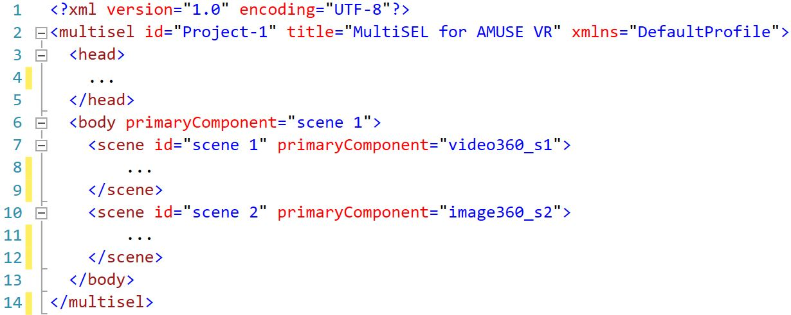

A imagem a baixo mostra de forma resumida como é um documento MultiSel.
Na linha 1, temos o cabeçalho de um documento XML.
Na linha 2 com fim na linha 14, temos a abertura e fechamento da tag do documento MultiSel.
Na linha 3 com fim na linha 5, temos a tag head que no MultiSel é opcional com função somente informativa.
Na linha 6 com fim na linha 13, temos a tag body, tag principal do documento, responsavel por comportar as cenas (scenes) e alguns relacionamentos do projeto
Na linha 6, ainda em body, temos o atributo primaryComponent que aponta para "scene 1", iniciar o documento
Na linha 7 com fim na linha 9, temos um exemplo da tag scene, onde será armazenado todos as mídias, efeitos sensoriais e alguns relacionamentos